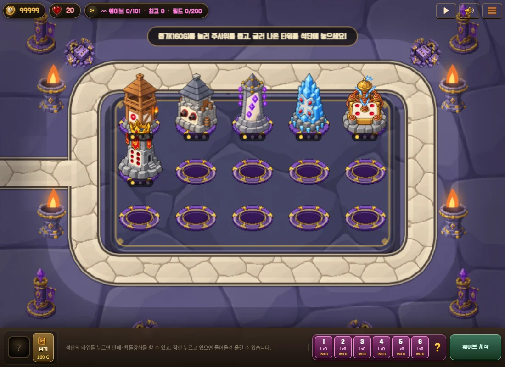
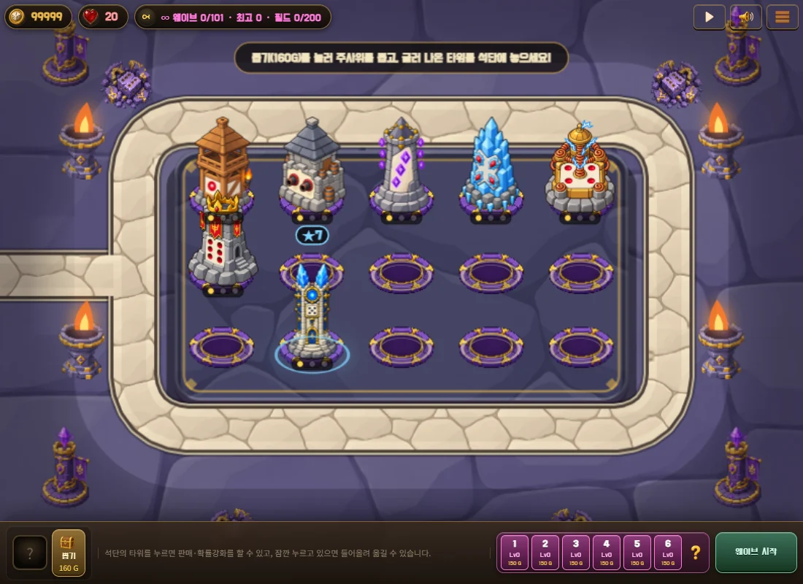

DICEKEEP · ART REVIEW 126
투기장, 더 넓고 조용한 바닥
바깥 바닥, 안쪽 보드, 둘레 길, 타워 석단의 잔선을 줄였습니다. 아래 가로 화면은 같은 크기의 실제 게임 캡처입니다.
전체 화면 비교
가로 화면 · 1100 × 800


네 영역을 같은 위치에서 확대
위 두 게임 화면의 동일 좌표를 잘랐습니다.
새 보드 위의 ★7
1~6성 타워와 함께 배치한 실제 화면

DICEKEEP · ART REVIEW 126
바깥 바닥, 안쪽 보드, 둘레 길, 타워 석단의 잔선을 줄였습니다. 아래 가로 화면은 같은 크기의 실제 게임 캡처입니다.
가로 화면 · 1100 × 800

위 두 게임 화면의 동일 좌표를 잘랐습니다.
1~6성 타워와 함께 배치한 실제 화면
